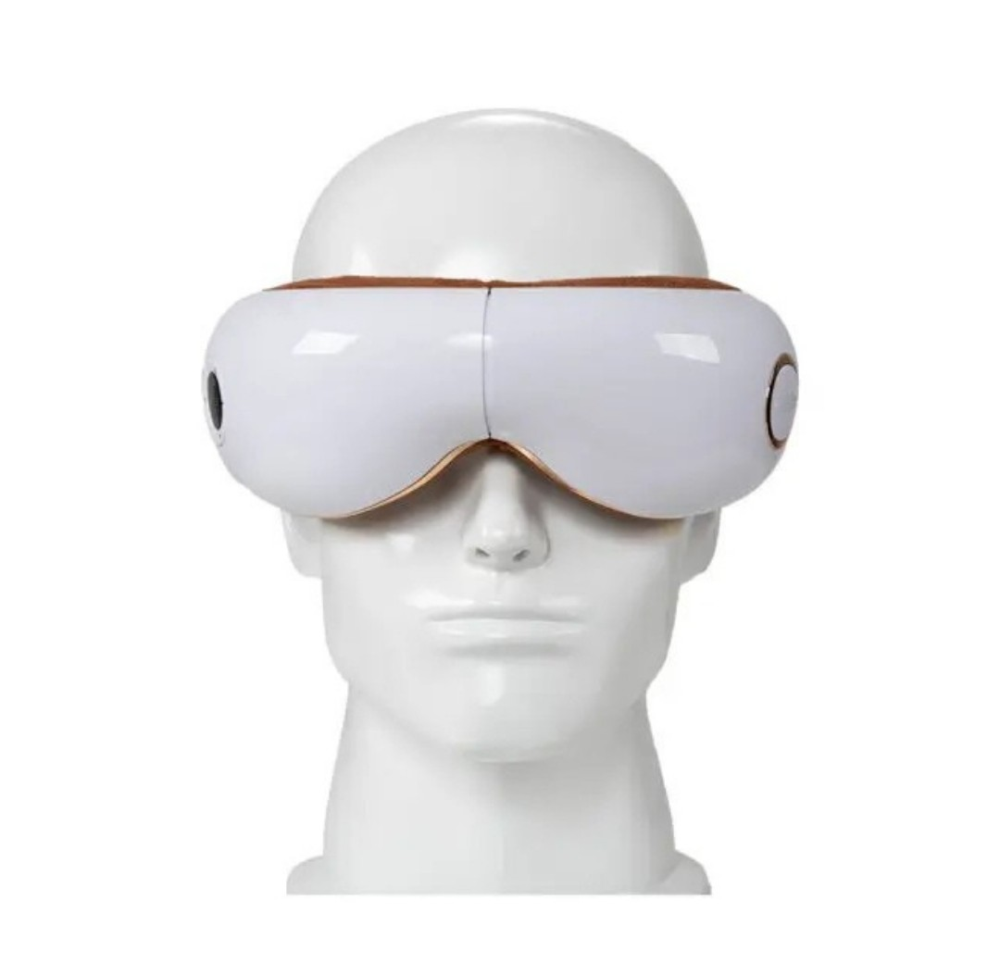
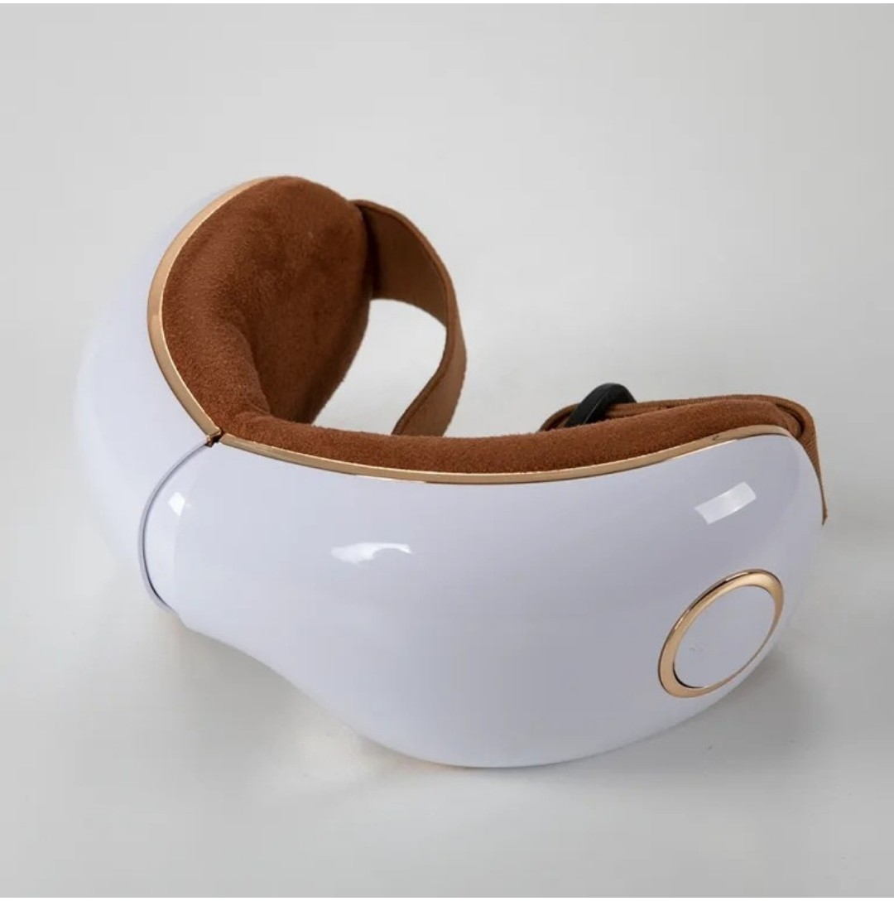
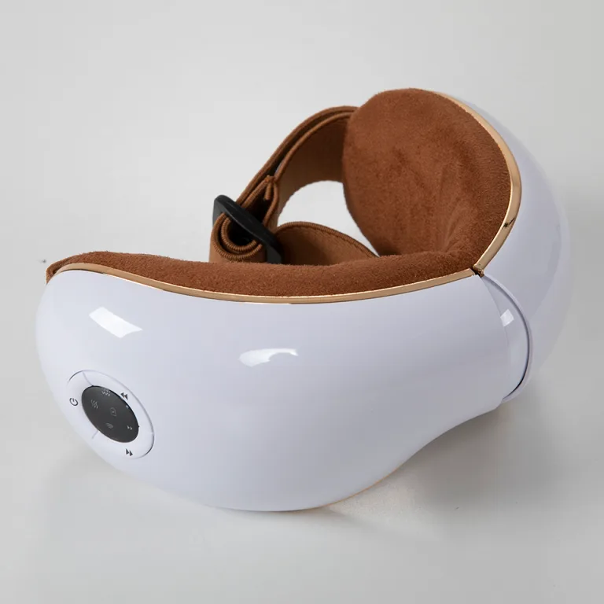
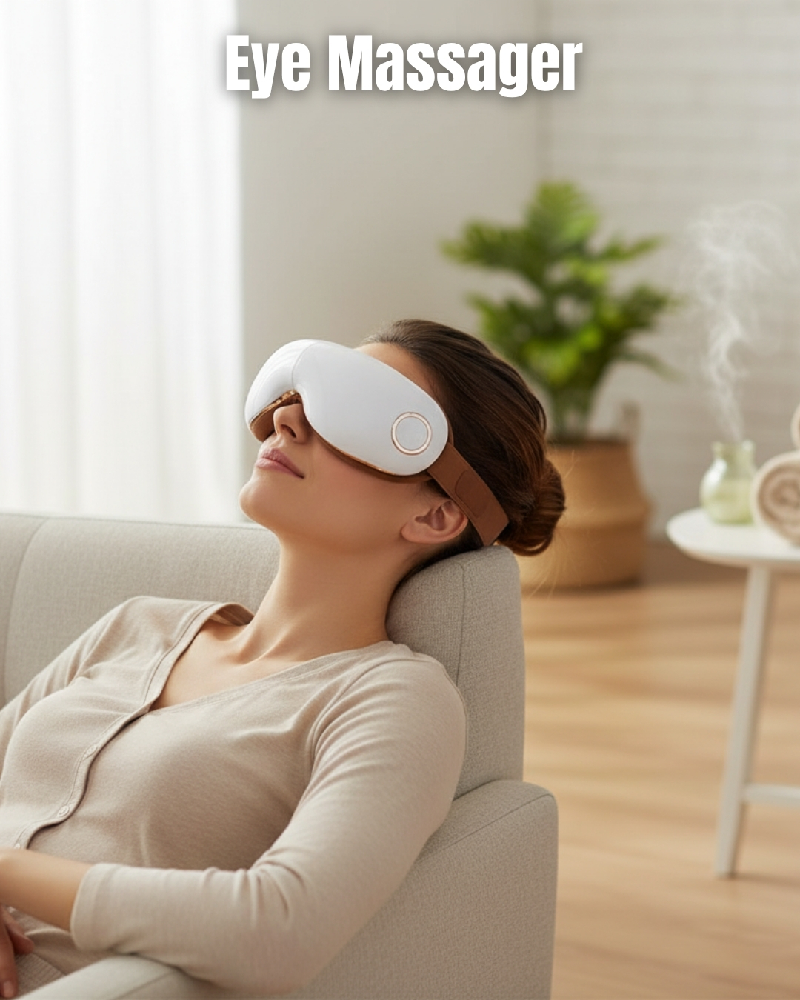

Other Items
Discover the Aadi Future Systems Eye Revitalizer — a luxurious retreat designed especially for your eyes. Blending gentle vibrations, calming heat, rhythmic air compression and soothing music, this rechargeable eye therapy massager offers a complete relaxation experience. Whether you're seeking relief from migraines, aiming to improve your sleep quality, or looking to ease the strain of tired, dry eyes, dark circles and under-eye puffiness, this device has you covered. Its elegant white design makes it more than just a wellness gadget — it’s a premium addition to your personal care routine, delivering a moment of calm and rejuvenation with every use.
Enquire Now